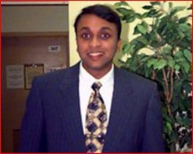
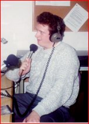

|
 “With A Little Help From My Friends...” Atlanta, GA “I came to this country in 1978 as a young six year old. I've worked hard and am now a United States citizen. I support Clinton/Gore �96 because they fight for the values and programs that are important for America. “When my mother died while I was still a sophomore at the University of Maryland, federal financial aid — including student loans and grants — helped me to not only complete my degree, but do it in four years. Without the assistance available through federal aid programs I would not have been able to graduate on time and I would not now be less than a year from recieving two graduate degrees. Bill Clinton and Al Gore have always been strong supporters of federal financial aid programs for college. “Bill Clinton and Al Gore also understand the benefits of legal immigration to this country. The outward looking foreign policy of Bill Clinton makes me proud to call myself an American. “In November of this year I will cast my first vote
for President, and I will cast it proudly for the
Clinton-Gore ticket.” |
by W. Lane Startin http://www.chinet.com/~faustus/  “President Clinton has been without a doubt the most effective president of my lifetime. I worked on his campaign in 1992 at Idaho State University during the primary and general election season. I did it because I felt he was someone who could deliver. I think I was right. AmeriCorps, family leave, student loans, Vice President Gore's efforts in streamlining government and a host of other projects will remain a part of his legacy for years to come. “Today, I am a graduate in mass communication living and working in the Chicago area, and I'm still solidly behind the President. I'm very grateful for the President's stance on student loans. “Without those, there's no way I'd be sitting here with a B.A. in hand today. At best, I'd be working and going to school on the ten-year plan. I'm also very supportive of his overall progressive outlook towards government, particularly in social policy. I firmly believe history demands us to move forward, not back, in time. “As for me, I'm working through the web and other resources to elect the President and other Democrats in 1996.” |
by Jeffrey Brick http://www.pitt.edu/~jabst41/c.html “My name is Jeffrey Brick and I am a 23 year old student at Oberlin College in Ohio, but currently taking classes at the University of Pittsburgh. 
I am a Political Science Major with an interest in the Internet and new multimedia. To help get the right kind of positive political messages that are needed on the net, I created a short Shockwave movie that you can see here, showing why Bill Clinton should be elected once again! “Bill Clinton, in his four years as President, has shown that government can help to make us efficient workers, students, teachers and volunteers. He has fought hard against cuts in education spending, worked to start a youth volunteer program, raised the minimum wage for all American workers, and proposed a tax credit for those seeking further education. Clinton has a view of the future in which education, hand in hand with technology and volunteering, will lead us with great hope into the twenty-first century.” |
||
|
|
||||
|
|
||||
|
|
||||
Paid for by Clinton/Gore ’96 General Committee, Inc.